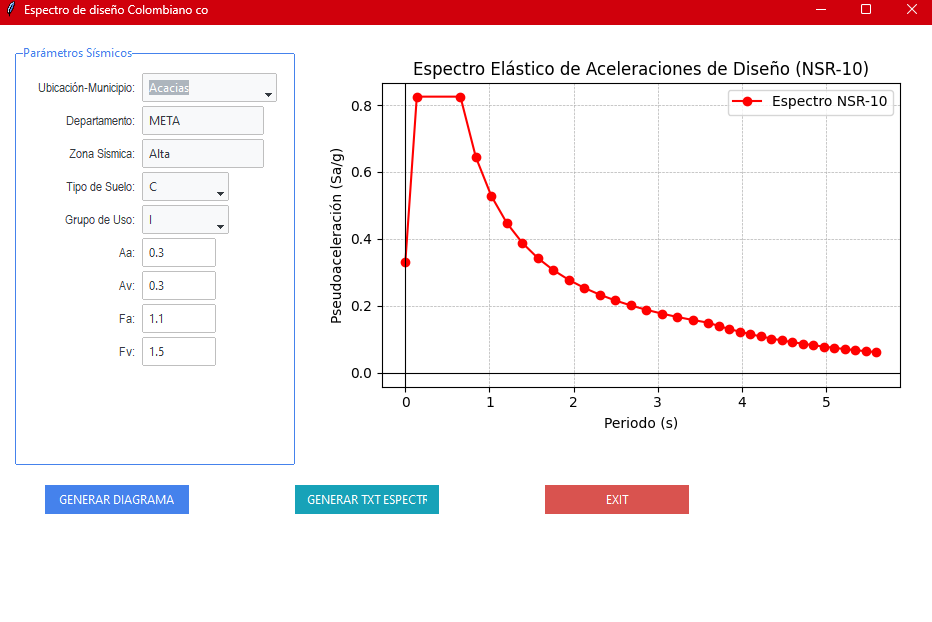

Python Desktop Tool
Generador de espectros (NSR-10) por municipio
Qué hace
Herramienta en Python con interfaz que genera el espectro de pseudoaceleración de diseño según la NSR-10, a partir de la selección del municipio en Colombia. El objetivo es acelerar el proceso de obtención, verificación y documentación de espectros para análisis sísmico.
Flujo de uso
- Seleccionar municipio.
- Calcular parámetros y generar el espectro.
- Exportar/usar la gráfica y valores en memoria técnica o modelación.
Características
- Selección de municipio (Colombia).
- Cálculo automático de parámetros de amenaza y espectro.
- Generación de gráfica lista para reportes.
- Enfoque en rapidez y reducción de errores manuales.
Capturas
A continuación se muestran ejemplos de la interfaz y los resultados generados por la herramienta.